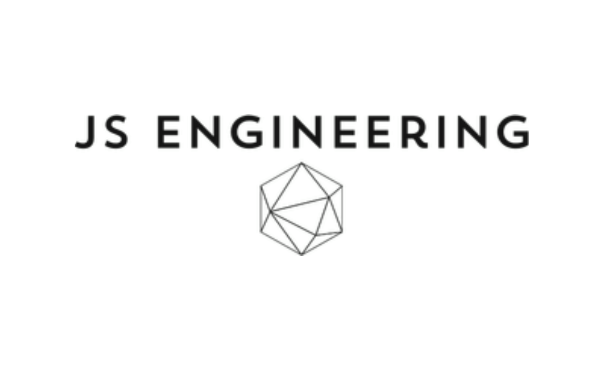

JS engineering wanted a simple logo focusing on their field. This logo represents their mission to
construct innovative and creative designs, and build nexus. The font is simple yet elegant, while
the icon adds more of a playful element to the design.